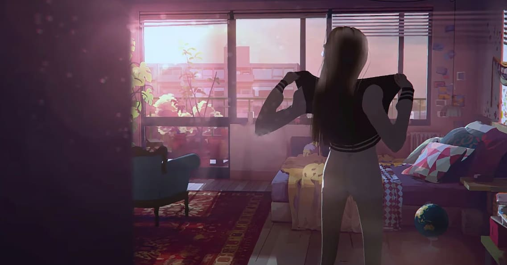
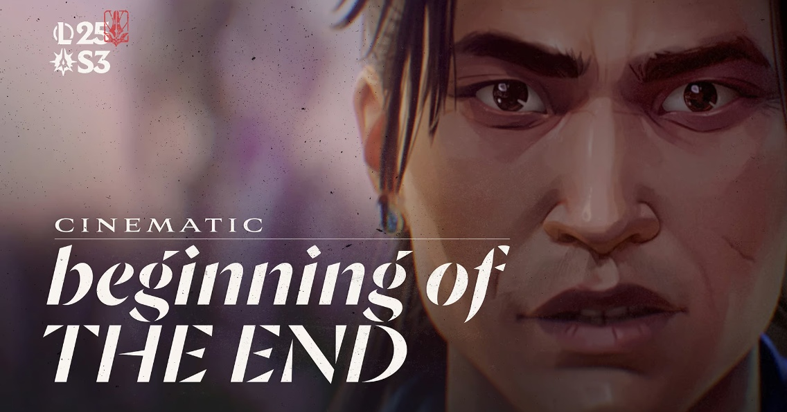
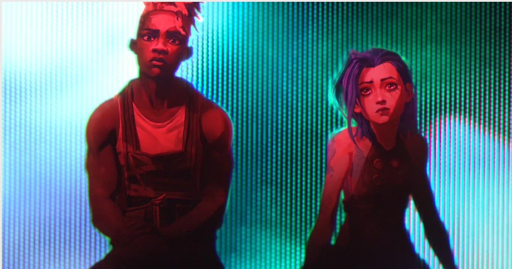
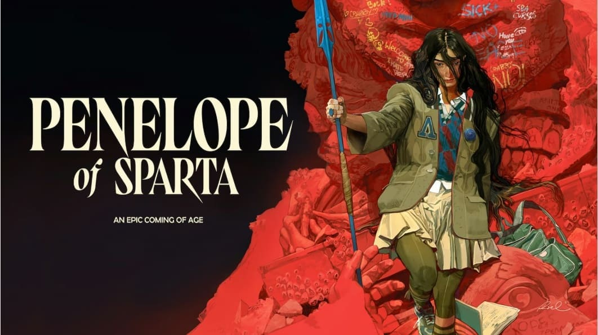

Cette bande-annonce épique annonce le défi « Road To Immo », un événement Twitch d'envergure réunissant Inoxtag, Squeezie, Gotaga et bien d'autres. Leur objectif ultime ? Atteindre le rang Immortal en seulement 5 jours.
Voir le projet →Arcane saison 1 est une série animée produite par Fortiche pour Riot Games et diffusée sur Netflix en 2021, dans l’univers du jeu League of Legends. Elle raconte l’histoire de deux sœurs, Vi et Jinx, dans les villes opposées de Piltover et Zaun.
Voir le projet →Arcane saison 2 est la suite et la conclusion de la série animée de Fortiche, produite pour Riot Games et diffusée sur Netflix en novembre 2024. Elle reprend l’histoire là où la saison 1 s’arrêtait, avec Piltover et Zaun au bord de la guerre, et suit le destin de Vi, Jinx et de leurs proches.
Voir le projet →A Dark Gambit est une cinématique de League of Legends réalisée par Fortiche pour Riot Games et sortie en avril 2025. Dans leur repaire secret au cœur de Noxus, LeBlanc et Vladimir concluent un pacte avec un mal ancien afin de récupérer un artefact puissant. Elle fait partie d’un arc narratif de quatre cinématiques lancé en janvier 2025, qui s’est conclu avec Twilight’s End.
Voir le projet →
La Gaviota est un clip d’animation réalisé par Fortiche en 2012 pour le groupe français La Gaviota, sur le titre « Limousine ». Pour un petit groupe français, il a été le premier projet à montrer la patte graphique de Fortiche. Ce clip a conduit Riot Games à contacter le studio pour sa toute première cinématique, Get Jinxed, ce qui a ouvert la voie à Arcane.
Voir le projet →
Beginning of the End est une cinématique de League of Legends de 1 minute 11, produite par Fortiche pour Riot Games et sortie en 2025. Elle met en scène LeBlanc, Atakhan et Xin Zhao dans un cauchemar terrible, ou peut-être une vision de ce qui va arriver. Elle fait partie d’un arc de quatre cinématiques lancé en janvier 2025 et conclu par Twilight’s End.
Voir le projet →
« Ma Meilleure Ennemie » est un clip animé réalisé par Fortiche pour le duo de Stromae et Pomme, extrait de la bande originale d’Arcane saison 2. Il reprend le lien onirique entre Jinx et Ekko de l’épisode 7 de la saison 2, en racontant cette fois le retour d’Ekko à la réalité. Fortiche y mélange des textures filmées à travers des écrans cathodiques, une animation stylisée et un grain analogique. Le clip a été réalisé par Tom Gouill et dévoilé en mars 2025.
Voir le projet →
Penelope of Sparta est le premier long métrage original de Fortiche, un film d’animation de science-fiction dévoilé au festival d’Annecy en 2024. Il raconte l’histoire, jamais racontée, de l’héroïne de L’Odyssée d’Homère, dans un récit d’initiation. Penelope, fille du roi Icarius, doit entrer dans un lycée d’élite de la ville rivale d’Athènes pour une mission secrète : libérer son pays de l’emprise de l’Empire. Le film reprend la signature graphique du studio, qui mêle 2D et rendu peint en 3D.
Voir le projet →